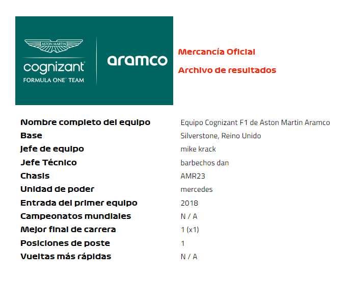
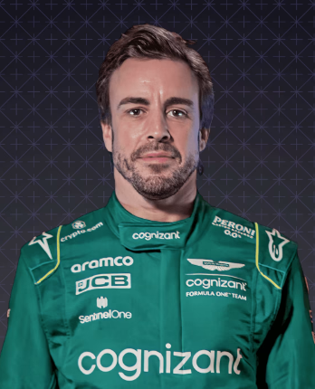
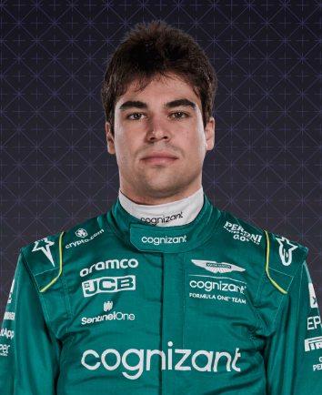

Aston Martin

En perfil
La incursión original de Aston Martin en la Fórmula 1, hace más de medio siglo, duró solo cinco carreras. Esta vez, sin embargo, es serio. Este equipo de F1 no es ajeno al éxito, ya que ganó con su forma original de Jordan y, más recientemente, como Racing Point en 2020. Reconocido por su capacidad para superar su peso, y ahora con un dos veces campeón al frente de su alineación de pilotos. , Aston Martin es en gran medida un equipo para ver...
2022
La temporada discreta ve al equipo retener el séptimo lugar en la clasificación, con P6 su mejor resultado de carrera, para Sebastian Vettel en Azerbaiyán y Japón, y Lance Stroll en Singapur. Vettel anuncia su retiro de la F1, y su compañero campeón Fernando Alonso firmó rápidamente como su reemplazo para 2023.
2021
No logra mantener el ritmo de sus rivales en el centro del campo y cae a P7 en la clasificación, anotando menos de la mitad de sus puntos en 2020. Lo más destacado es el podio de Sebastian Vettel en Azerbaiyán más los quintos lugares en Spa y Mónaco. El punto bajo es su descalificación de P2 en Hungría por una infracción de combustible.
2020
Con el equipo firmemente de nuevo en pie, el nombre de Racing Point logra una primera victoria en la carrera en camino al cuarto lugar en la clasificación cortesía de Sergio Pérez, quien es reemplazado por Sebastian Vettel para 2021 y la transformación del equipo a Aston Martin.
2019
La resaca de la agitación de 2018 pasa factura, y la recuperación del equipo es lenta, a pesar de algunos impulsos valientes del siempre confiable Sergio Pérez, quien anota 52 de sus 73 puntos, asegurando que retengan el séptimo lugar en la tabla de constructores.
2018
A medida que continúa la estrecha rivalidad dentro del equipo entre el incondicional Sergio Pérez y el protegido de Mercedes, Esteban Ocon, descienda hacia la parte trasera del medio campo en medio de la incertidumbre financiera, que culminó con la nueva propiedad, el nuevo nombre de Racing Point y una nueva entrada al campeonato del GP de Bélgica de agosto. adelante. Recupérese bien para terminar séptimo en la general, a pesar de perder 59 puntos acumulados antes de Spa.
Pilotos

Fernando alonso

Paseo de lanza